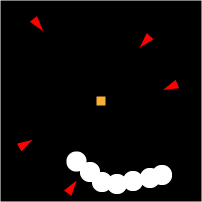

Blocker is a game about defense. There is a treasure at the center of the screen, with enemies moving toward it. The player is not represented on screen, instead acting like an omnipresent protector, putting up barriers to stop the enemies.
Blocker is most similar to a tower defense game, but without the towers. Instead of towers, you put up barriers in real time with clicking and dragging your mouse. There are also no paths enemies have to take. The entire screen is open to them.
The priority is to have this on the web. But it would work well on mobile too, replacing clicking and dragging with touch input.
This is an abstract game, so there is no story. The player's goal is to protect the treasure for as long as possible. There are no themes (except possibly for the futility of effort, as the player cannot truly win.) There is no progression currently planned, aside from there being more enemies. The mood is similar to arcade games (exciting, intense).
The graphics will be simple, using rudimentary shapes. I will use similarly simple sounds, in the retro style. There will be sounds for creating a barrier, destroying an enemy, and when the game ends, as well as a general soundtrack. Enemy areas that can be destroyed are in red. Impervious areas are in purple. The treasure will be a gold square. Barriers will be white. There is a timer that counts up from when the game starts and stops when the game ends. This acts like a score for the player.
The only player input is creating barriers with the left mouse button by clicking
and dragging. This can be replicated on mobile if possible. There will be no keyboard input.
The game takes place from a top-down perspective. The game starts with a single standard enemy
approaching the treasure. If the player does nothing, the enemy will eventually make its way
to the treasure and the game will start over. It is up to the player to click on the mouse button
and drag the mouse, which will create the barrier and kill the enemy. Then the game truly begins.
The player will need to learn to be aware of many things at once, always knowing how safe the
treasure is and the most efficient way of protecting it. One strategy is to kill multiple
enemies with one barrier.
A more specific example: There will be an enemy that, instead of moving continuously in a straight line,
zigs and zags towards the treasure. The player will have to anticipate where the enemy will go next to
defeat it. Because there are different types of enemies at different locations, the player will have to
prioritize which enemies to kill immediately.
One last example: There is an enemy that consists of two invincible orbs rotating in a circular path.
This circles are connected by a vulnerable string. Once the player damages the string, the orbs fly off
in the direction of their tangential velocity. The player must make sure that the orbs don't fly into the
treasure.
If a barrier hits a vulnerable part of an enemy, the enemy is destroyed. If a barrier hits an
invulnerable part, the barrier is destroyed.
The starting state of the game.
 Scene with enemies (red), barriers (white) and the treasure (gold).
Caleb Katzenstein is a Game Design and Development Major at the Rochester Institute of Technology. He enjoys Netflix, Youtube, animation, cooking, and video games.